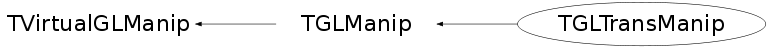

class TGLTransManip: public TGLManip
TGLTransManip Translation manipulator - attaches to physical shape and draws local axes widgets with arrow heads. User can mouse over (turns yellow) and L click/drag to translate along this axis. Widgets use standard 3D package axes colours: X red, Y green, Z blue.
Function Members (Methods)
public:
| TGLTransManip() | |
| TGLTransManip(TGLPhysicalShape* shape) | |
| TGLTransManip(const TGLTransManip&) | |
| virtual | ~TGLTransManip() |
| void | TGLManip::Attach(TGLPhysicalShape* shape) |
| static TClass* | Class() |
| virtual void | Draw(const TGLCamera& camera) const |
| Bool_t | TGLManip::GetActive() const |
| TGLPhysicalShape* | TGLManip::GetAttached() const |
| UInt_t | TGLManip::GetSelectedWidget() const |
| virtual Bool_t | TGLManip::HandleButton(const Event_t& event, const TGLCamera& camera) |
| virtual Bool_t | HandleMotion(const Event_t& event, const TGLCamera& camera) |
| virtual TClass* | IsA() const |
| virtual Bool_t | TGLManip::Select(const TGLCamera&, const TGLRect&, const TGLBoundingBox&) |
| void | TGLManip::SetActive(Bool_t a) |
| void | TGLManip::SetSelectedWidget(UInt_t s) |
| virtual void | ShowMembers(TMemberInspector& insp) |
| virtual void | Streamer(TBuffer& b) |
| void | StreamerNVirtual(TBuffer& b) |
protected:
| void | TGLManip::CalcDrawScale(const TGLBoundingBox& box, const TGLCamera& camera, Double_t& base, TGLVector3* axis) const |
| const UChar_t* | TGLManip::ColorFor(UInt_t widget) const |
| TGLManip& | TGLManip::operator=(const TGLManip&) |
Data Members
protected:
| Bool_t | TGLManip::fActive | ! manipulator is active? |
| TPoint | TGLManip::fFirstMouse | ! first (start) mouse position (in WINDOW coords) |
| TPoint | TGLManip::fLastMouse | ! last (latest) mouse position (in WINDOW coords) |
| UInt_t | TGLManip::fSelectedWidget | ! active width (axis) component |
| TGLPhysicalShape* | TGLManip::fShape | ! manipulated shape |
Class Charts
{kind=link}
{kind=link}
{kind=link}
{kind=link}

Function documentation
TGLTransManip(TGLPhysicalShape* shape)
Construct translation manipulator, attached to supplied TGLViewer 'viewer', bound to TGLPhysicalShape 'shape'.
void Draw(const TGLCamera& camera) const
Draw translation manipulator - tubes with arrow heads, in local axes of attached shape, in red(X), green(Y) and blue(Z), with white center sphere. If selected widget (mouse over) this is drawn in active colour (yellow).
Bool_t HandleMotion(const Event_t& event, const TGLCamera& camera)